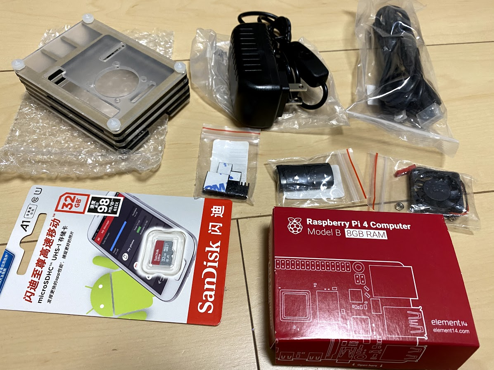
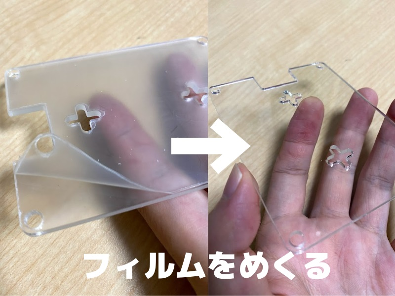
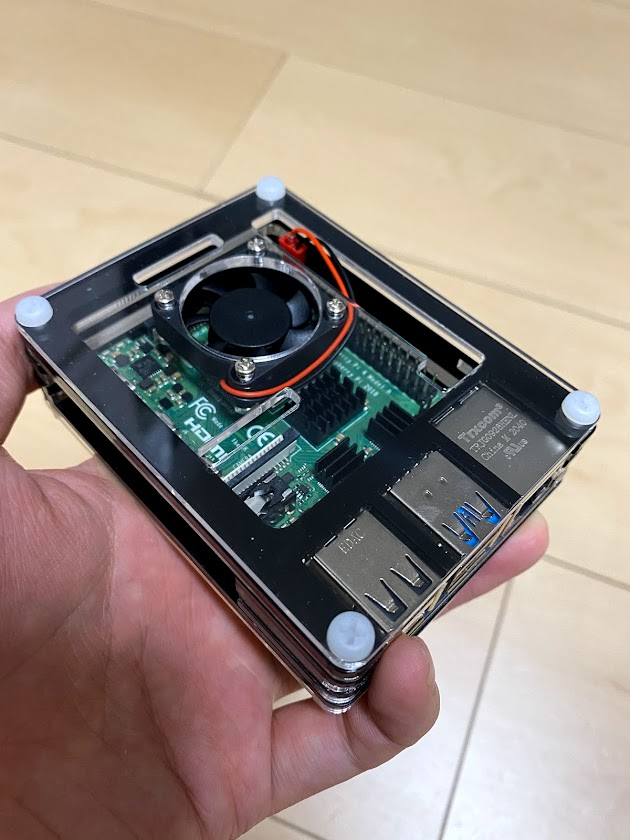
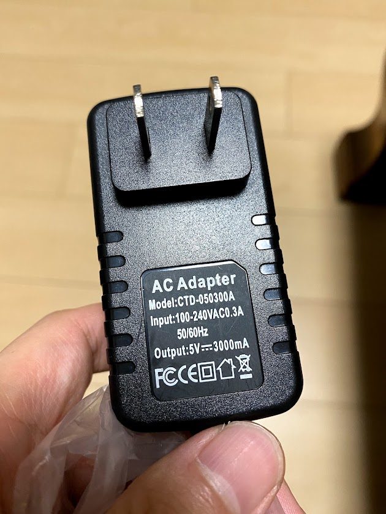
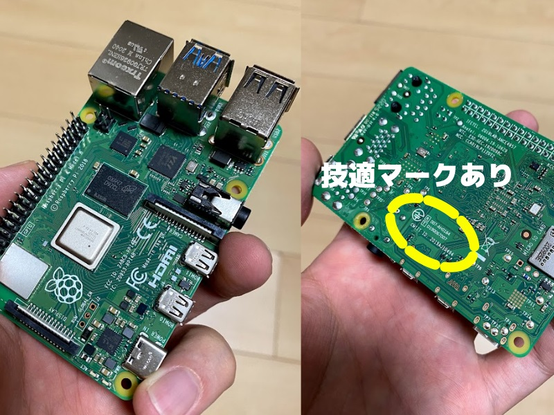
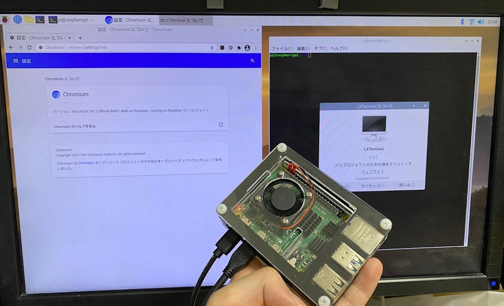

この記事はBanggoodの提供でお届けします。
以前紹介したようにこのブログはBanggoodと提携させていただいており、今回紹介するCatda® Raspberry pi 4 Development Board 2G 4G 8G Motherboard Computer AI Intelligent Programming Python Kitも、Banggoodからいただいたものとなります。（Catda® Raspberry pi 4 Development Board 2G 4G 8G Motherboard Computer AI Intelligent Programming Python Kitのレビューがしたい！と言ったのは自分なので、Banggoodが無理やりこの商品を押しているわけではなく、inajobの一押しアイテム！、という感じです。）
Catda® Raspberry pi 4 Development Board 8G Motherboard Computer AI Intelligent Programming Python Kit とは？
要はRaspberryPi4 始めようキット的なものです。
RaspberryPi 4本体に加えて以下が含まれています。
- アクリルサンドイッチのケース
- USB Type-CのACアダプタ(5V3A、スイッチ付き)
- microHDMI-HDMIケーブル
- 32GB microSDカード
- microSDカードリーダー
- ファン
- ヒートシンク4つ

ケースはアクリル板を重ねて作られた、いわゆる「アクリルサンドイッチ式」のケースです。
アクリル板には薄いフィルムが付いているので、爪でカリカリやって剥がします。

ケースにはファンを取り付けるためのネジ穴があり、結構発熱するRaspberryPi4を冷やしてくれます。 ファンの電源はRaspberryPi 4のGPIOから取得します。
熱くなる部品には、付属しているヒートシンクをつけることで、放熱効率を高めることができます。 （これがどの程度効果があるのかは、謎ですが・・）

ACアダプタは5V3Aとそこそこに大容量で、ケーブル途中にスイッチが付いており、USBケーブルを抜かずに電源をOFF/ON出来て非常に便利です。

Raspberry Pi 4は今回はメモリは最大の8GB搭載のものにしました。またRaspberry Pi 4は技適マークがついているものと、付いていないものがあるのですが、私の注文したものについては技適マークがついていることを確認しました。（商品写真には付いていなかったりするので、注文時期などによって違いがあるかもしれません）

セットアップ
まぁ、セットアップは普通ネットを探せばやり方が見つかるので、それに従います。
自分は https://www.raspberrypi.org/software/ からRaspberry Pi Imagerをダウンロードして、Raspberry Pi OS(32bit)をインストールしました。 8GBのメモリを最大限に生かすためには、64bitのOSを選択すべきなのでしょうが、ひとまず慣れているRaspberry Pi OSにしました。
付属していたmicroSDカードリーダーで、これまた付属していたmicroSDカードに問題なくOSイメージを書き込むことが出来ました。
Raspberry Piの無線LANをmicroSDで設定するなどを参考にしつつ、SDカードのbootパーティションに設定ファイルを置くことで、WiFiの設定をしました。
RaspberryPi 4は5GHzのWiFiにも対応していたので、そちらを設定しました。
で、手近にあったキーボードとマウスを取り付け、付属していたHDMIケーブルでディスプレイとつないで、付属の電源ケーブルを繋いで、起動させました。

元々持っていたRaspberry Pi 3と比べると明らかに性能が良くなっており、ブラウジング用途などであれば普段使いとしても全く問題なく利用できると感じました。
まとめ
Raspberry Pi 4はかなりパワフルなLinuxボードで、普段使いのパソコンとしても、そこそこ使えるレベルでした。
とは言え、抜き身のボードでは危なっかしいので、このようなキットで一式そろえられるというのは良いものだと感じました。
自分ですべて揃えられる！とか、余りのパーツがある、という人はそれで良いのでしょうけど、何もない所からRaspberry Pi 4を試してみたい！という方にはぴったりの製品です。
クーポンコード
さて、ここまで紹介してきたCatda® Raspberry pi 4 Development Board 2G 4G 8G Motherboard Computer AI Intelligent Programming Python Kitですが、今回Banggoodの提供という事で、15%OFF(15,726円 → 13,413円くらい)で購入できるクーポンを頂いています。
コード： BGec4b3a (09/30まで)
Catda® Raspberry pi 4 Development Board 2G 4G 8G Motherboard Computer AI Intelligent Programming Python Kitをカートに入れ、チェックアウト後にこのクーポンコードを入力することで割引を受けることが出来ます。
有効期限は2021/09/30なので、買いたい方はお早めにどうぞ！（加えて、在庫に限りがあると思うのでお早目に！）
Banggoodでは、「15周年記念セール」ということで、ほかにも様々なガジェットを格安で販売しているようです。気になる人はのぞいてみてください。


関連記事